Web of Spider-Man (1984 - 2012)
| Comic Book | Release Date | Cover |
|---|---|---|
| Web of Spider-Man #1 'Til Death Do Us Part! | 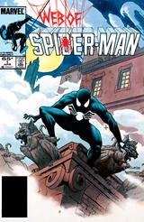 | |
| Web of Spider-Man #2 Treasures! | 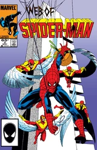 | |
| Web of Spider-Man #3 Vulture Is as Vulture Does! | 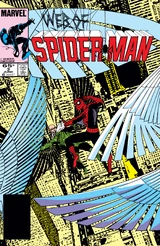 | |
| Web of Spider-Man #4 Arms and the Man! | 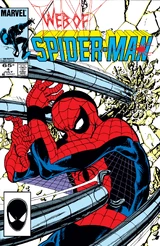 | |
| Web of Spider-Man #5 The Enemy Within! | ||
| Web of Spider-Man #6 Gold Rush! | 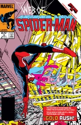 | |
| Web of Spider-Man #7 Welcome... ...to My Nightmare! | ||
| Web of Spider-Man #8 Local Superhero! | 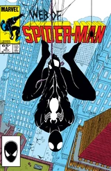 | |
| Web of Spider-Man #9 The Twilight Heroes | 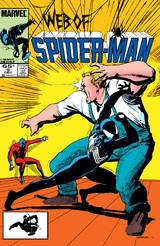 | |
| Web of Spider-Man #10 There, But for Fortune! | 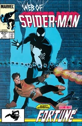 | |
| Web of Spider-Man #11 Have You Seen... That Vigilante Man! | 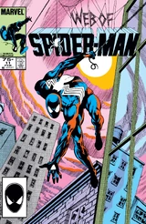 | |
| Web of Spider-Man #12 Law and Order | 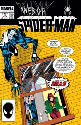 | |
| Web of Spider-Man #13 Point of View | 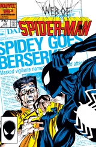 | |
| Web of Spider-Man #14 All That Glitters | 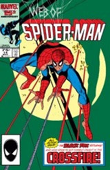 | |
| Web of Spider-Man #15 Fox Hunt | 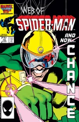 | |
| Web of Spider-Man #16 Underworld! | 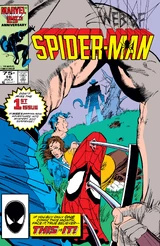 | |
| Web of Spider-Man #17 The Magma Solution | 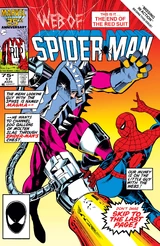 | |
| Web of Spider-Man #18 The Longest Road! | 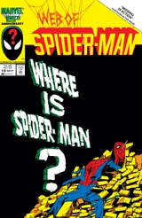 | |
| Web of Spider-Man #19 Humbug! | 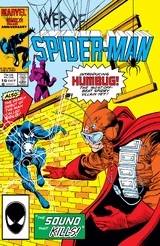 | |
| Web of Spider-Man #20 Little Wars! | 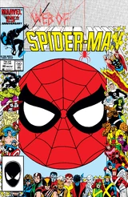 | |
| Web of Spider-Man #21 The Enemy Unknown! | 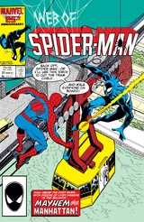 | |
| Web of Spider-Man #22 Profit of Doom | 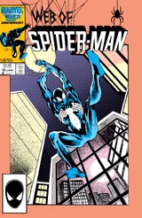 | |
| Web of Spider-Man #23 Slip Slydin' Away! | 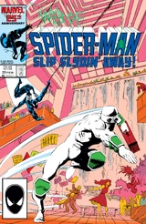 | |
| Web of Spider-Man #24 High Stakes | 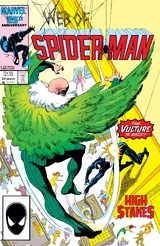 | |
| Web of Spider-Man #25 Beware the Stalker from the Stars! | 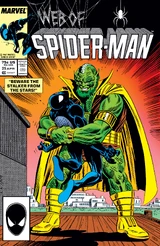 | |
| Web of Spider-Man #26 Nothing to Fear | 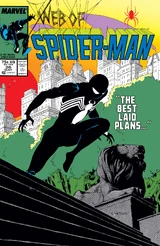 | |
| Web of Spider-Man #27 Scared to Succeed! | 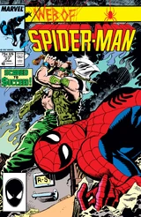 | |
| Web of Spider-Man #28 Torch Bearing | 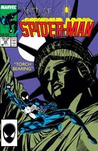 | |
| Web of Spider-Man #29 Mask | 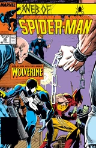 | |
| Web of Spider-Man #30 The Wages of Sin | 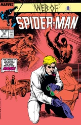 | |
| Web of Spider-Man #31 The Coffin | 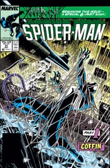 | |
| Web of Spider-Man #32 Resurrection | 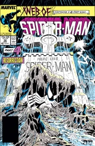 | |
| Web of Spider-Man #33 What's the Matter with Mommy? | ||
| Web of Spider-Man #34 Fourth and Eternity | 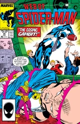 | |
| Web of Spider-Man #35 You Can Go Home Again! | 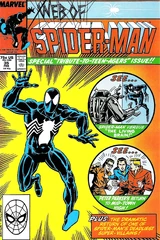 | |
| Web of Spider-Man #36 Phreak-Out! | 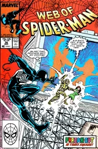 | |
| Web of Spider-Man #37 When Strikes the Slasher! | ||
| Web of Spider-Man #38 Moving Up | ||
| Web of Spider-Man #39 Petty Crimes | 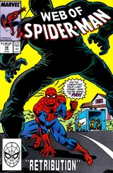 | |
| Web of Spider-Man #40 All You Need Is Love | 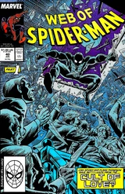 | |
| Web of Spider-Man #41 That Old-Time Religion | 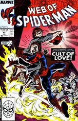 | |
| Web of Spider-Man #42 Pressure! | ||
| Web of Spider-Man #43 Autodafe, or... Nobody Expects the Spanish Inquisition | 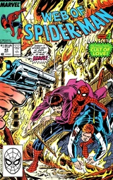 | |
| Web of Spider-Man #44 Reunion | 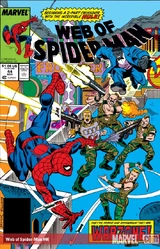 | |
| Web of Spider-Man #45 Death from Above! | 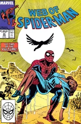 | |
| Web of Spider-Man #46 The Power of... Hate! | 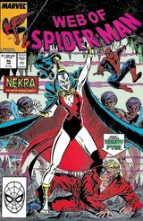 | |
| Web of Spider-Man #47 The Face in the Mirror | 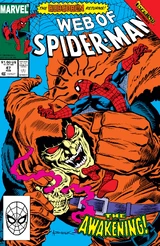 | |
| Web of Spider-Man #48 Eyes of the Demon | 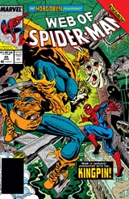 | |
| Web of Spider-Man #49 Corner Business | 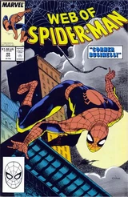 | |
| Web of Spider-Man #50 1,000 Words | 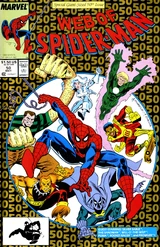 | |
| Web of Spider-Man #51 The Crimelord of New York! | 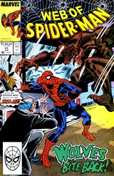 | |
| Web of Spider-Man #52 Chains | ||
| Web of Spider-Man #53 Wolves in the Night | 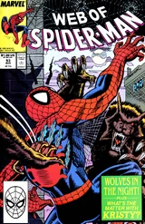 | |
| Web of Spider-Man #54 The Wolves of War | 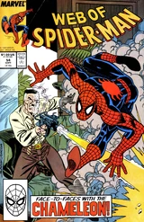 | |
| Web of Spider-Man #55 Showdown | 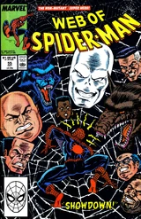 | |
| Web of Spider-Man #56 Skin-Deep | 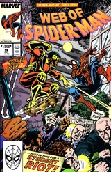 | |
| Web of Spider-Man #57 Flesh and Blood | 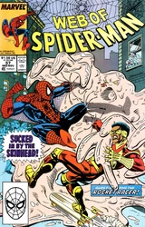 | |
| Web of Spider-Man #58 Rematch | ||
| Web of Spider-Man #59 With Great Power | ||
| Web of Spider-Man #60 The Harder They Fall | ||
| Web of Spider-Man #61 Dragon in the Dark | ||
| Web of Spider-Man #62 All That Glitters | ||
| Web of Spider-Man #63 Clouds from a Distant Storm | ||
| Web of Spider-Man #64 Once More, With Feeling | ||
| Web of Spider-Man #65 The Last Act of Vengeance | ||
| Web of Spider-Man #66 Friends and Enemies | ||
| Web of Spider-Man #67 With Friends Like These! | ||
| Web of Spider-Man #68 Tombstone Territory | ||
| Web of Spider-Man #69 A Subtle Shade of Green | ||
| Web of Spider-Man #70 A Hulk by Any Other Name | ||
| Web of Spider-Man #71 Fortune's Fury | ||
| Web of Spider-Man #72 The Reckoning | ||
| Web of Spider-Man #73 Head Quest | ||
| Web of Spider-Man #74 Art and Soul | ||
| Web of Spider-Man #75 Cold Hands Warm Art | ||
| Web of Spider-Man #76 Art's Desire! | ||
| Web of Spider-Man #77 Home Is Where the Terror Is! | ||
| Web of Spider-Man #78 Toast of the Town | ||
| Web of Spider-Man #79 First Blood | ||
| Web of Spider-Man #80 This Blood Is My Blood | ||
| Web of Spider-Man #81 Living in Fear | ||
| Web of Spider-Man #82 Pumping Up! | ||
| Web of Spider-Man #83 Entrepreneurs | ||
| Web of Spider-Man #84 Family Ties | ||
| Web of Spider-Man #85 Three the Hard Way | ||
| Web of Spider-Man #86 The Dark Within | ||
| Web of Spider-Man #87 The Best Defense | ||
| Web of Spider-Man #88 The King Makers | ||
| Web of Spider-Man #89 A Rose by Any Other Name | ||
| Web of Spider-Man #90 The Spider's Thread | ||
| Web of Spider-Man #91 Making Amends Meet | ||
| Web of Spider-Man #92 Foreign Affairs | ||
| Web of Spider-Man #93 The Test | ||
| Web of Spider-Man #94 Target Two | ||
| Web of Spider-Man #95 Spirits of Venom, Part 1: Storm Shadows | ||
| Web of Spider-Man #96 Spirits of Venom, Part 3: Enemies: A Hate Story | ||
| Web of Spider-Man #97 My Enemy's Enemy..., Part 1 of 4: Opening Volley | ||
| Web of Spider-Man #98 My Enemy's Enemy..., Part 2 of 4: Uneasy Alliances | ||
| Web of Spider-Man #99 My Enemy's Enemy..., Part 3 of 4: The Swords Are Drawn | ||
| Web of Spider-Man #100 My Enemy's Enemy..., Conclusion: Total War | ||
| Web of Spider-Man #101 Darklight | ||
| Web of Spider-Man #102 Sinking Fast | ||
| Web of Spider-Man #103 Sin City | ||
| Web of Spider-Man #104 Infinity Crusader | ||
| Web of Spider-Man #105 Soul Gauntlet | ||
| Web of Spider-Man #106 Judgment Day | ||
| Web of Spider-Man #107 The Coming Storm | ||
| Web of Spider-Man #108 The Eye of the Storm | ||
| Web of Spider-Man #109 A Shock to the System | ||
| Web of Spider-Man #110 Final Sanction | ||
| Web of Spider-Man #111 Scales of Justice | ||
| Web of Spider-Man #112 Trail's End | ||
| Web of Spider-Man #113 Darkness Descends | ||
| Web of Spider-Man #114 Who Among Us? | ||
| Web of Spider-Man #115 Shellshocked! | ||
| Web of Spider-Man #116 Crescendo | ||
| Web of Spider-Man #117 Power and Responsibility - Part One: Shadow Rising | ||
| Web of Spider-Man #118 Memories | ||
| Web of Spider-Man #119 Echoes of Silence | ||
| Web of Spider-Man #120 Lure of the Spider | ||
| Web of Spider-Man #121 The Hunting | ||
| Web of Spider-Man #122 The Call | ||
| Web of Spider-Man #123 True Lies | ||
| Web of Spider-Man #124 Walls | ||
| Web of Spider-Man #125 Lives Unlived | ||
| Web of Spider-Man #126 Opening Statements | ||
| Web of Spider-Man #127 The Last Temptation of Peter Parker | ||
| Web of Spider-Man #128 Who Will Wear the Webs? | ||
| Web of Spider-Man #129 By My Hand, Mary Jane Must Die | ||
| Web of Spider-Man #129.1 Brooklyn Avengers: Part One | ||
| Web of Spider-Man #129.2 Brooklyn Avengers: Part Two |